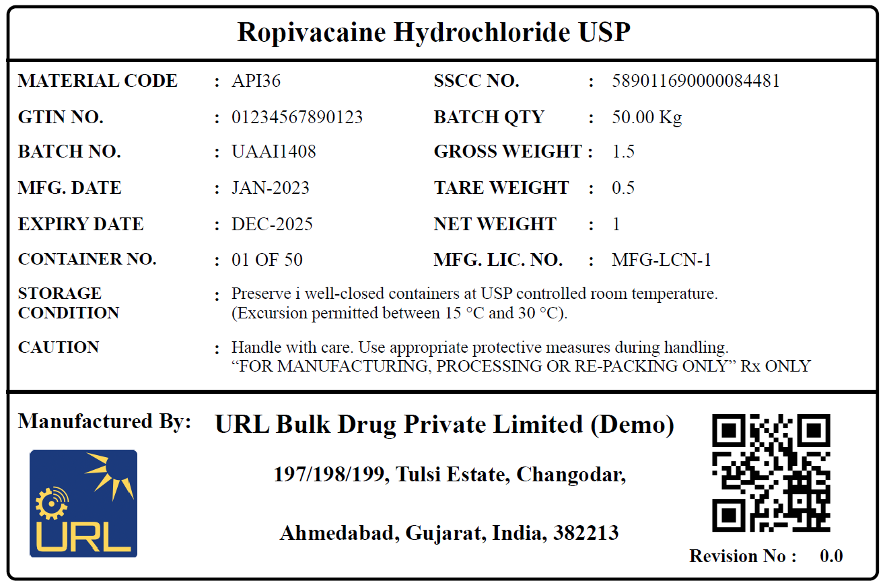
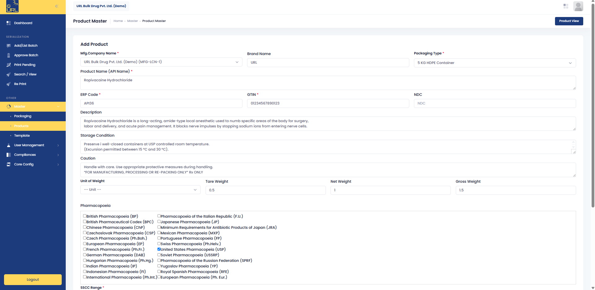
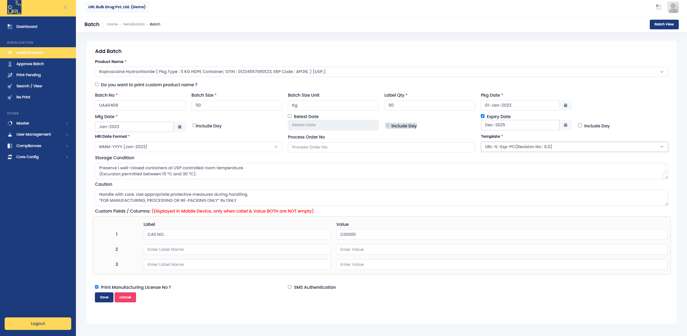
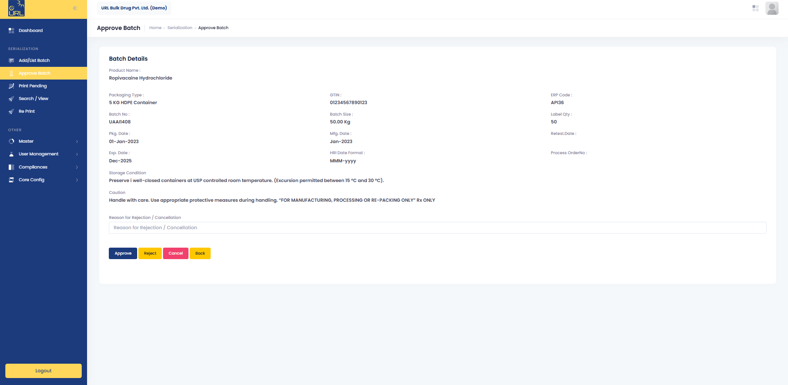

Counterfeit exposure
An unserialized supply chain has no visibility and no chokepoint. That gap is exactly where fake and sub-standard raw material enters — damaging the manufacturer whose name is on the drum long before anyone traces it back.
APIQR is cloud-based API serialization software that turns your batch data into G.S.R. 20(E)-compliant QR code labels — every mandatory particular, GS1 SSCC serials, and a full audit trail.
No new servers No change to your packing line 30-minute demo on your own data, no obligation
Built by URL Aseptic Automation — pharmaceutical track and trace for over twelve years, with serialization running to US DSCSA, EU FMD and five other global mandates.

Encoded in this QR code
Plus eight further mandatory particulars. See all eleven G.S.R. 20(E) fields
The regulation
Notified by the Ministry of Health and Family Welfare on 18 January 2022 under No. CG-DL-E-19012022-232768, and in force since 1 January 2023, guideline G.S.R. 20(E) requires every Active Pharmaceutical Ingredient manufactured or imported in India to carry a QR code on its label at each packaging level — machine-readable, and carrying eleven specific particulars.
An unserialized supply chain has no visibility and no chokepoint. That gap is exactly where fake and sub-standard raw material enters — damaging the manufacturer whose name is on the drum long before anyone traces it back.
Buyers and inspectors now ask for the QR code by default. A pack that cannot be scanned is a finding on an audit report and a question mark on a purchase order — and both cost far more to answer after the fact.
When something does go wrong, serialized packs let you isolate the affected batch and containers in hours instead of guessing across a whole consignment. Traceability is what turns a recall into a contained event.
From batch sheet to scannable pack
Nothing about your packing line changes. Your team enters what it already knows, an authorised user approves it, and APIQR does the rest.
Company code, username and password. Browser only — nothing to install on the shop floor.
Packaging types, product data — GTIN, NDC, pharmacopoeia, storage conditions, weights — and your label templates.
Batch number, size, manufacturing and expiry or retest dates, label quantity, template. Two minutes of typing.
An authorised user approves, rejects or cancels — with a recorded reason. Once approved, the batch locks.
GS1 SSCC codes are issued automatically, usually within five to ten minutes, one per container.
Print pending labels in bulk, reprint securely when you need to, and every action stays in the audit trail.

Anyone with a phone camera · apiqr.in · no app to install
Inside the platform
APIQR is in production today. These are real screens from the running application — the same ones your QA and packing teams will use.

Everything the label and the QR payload need lives in one record, so nobody retypes a GTIN at eleven at night.

Pick the product, enter the batch, choose the template. Custom label fields cover anything your buyer asks for that the regulation does not.

A second pair of eyes reviews the whole batch record before a single serial exists. Rejections carry a written reason into the audit log.

A 50-container batch produces 50 distinct SSCC codes. Weights are editable per container, and the label preview is exactly what comes off the printer.
Packaging types, product master data and label templates, defined once and reused everywhere.
Create and manage batches with size, dates, label quantity and process order number.
Multi-level approval with approve, reject and cancel controls, each audit-logged with its reason.
See what is waiting, print batch-wise, and edit container weights before the label is committed.
Find any batch status, print history or user action across every product, instantly.
Authenticated reprint by SSCC or batch number — the guard against unauthorised label duplication.
Administrator, Supervisor and Operator roles with granular rights, or cloned from a template.
Password policy, audit logs and production reports — downloadable on demand, not on request.
Company details and SSCC number ranges managed centrally, so serials never collide.
Why URL Aseptic Automation
APIQR is built by URL Aseptic Automation — an engineering company with in-house software, automation and end-of-line expertise, serving pharmaceutical manufacturers for over a decade against US DSCSA, EU FMD, Russia, China, Uzbekistan, Brazil and Turkey mandates.
Industrial barcoding, product authentication and traceability inside a compliance framework — that is the whole business, not a product line.
Machines, automation, software and cloud from a single vendor. No integration finger-pointing when a line stops.
A proven base across global serialization mandates, not a first deployment learning on your batch.
A dedicated team follows every new notification and amendment, so your compliance keeps pace without you chasing it.
No hidden charges, and no surprise line items once the project is underway.
Packing runs at night and on weekends. So does the team that supports it.
Because APIQR is cloud-native and pre-built to G.S.R. 20(E), there is no server procurement, no line modification and no bespoke development between you and a compliant label.
Comparison against publicly published implementation timelines for competing pharmaceutical track-and-trace platforms.Questions we get asked
The eight we are asked most. All twelve questions are on the FAQ page.
API serialization is the process of giving every pack of an Active Pharmaceutical Ingredient — a bulk drug — a unique, traceable identity, encoded in a QR code on the label.
That identity carries a standard set of details such as GTIN, SSCC, batch number, batch size, and manufacturing and expiry dates, so the pack can be identified and traced at any point in the supply chain: where it is now, and where it has been.
Yes. Guideline G.S.R. 20(E) was notified by the Ministry of Health and Family Welfare on 18 January 2022 under No. CG-DL-E-19012022-232768 and came into force on 1 January 2023.
It requires every API or bulk drug manufactured or imported in India to carry a QR code on its label at each packaging level, readable by a software application for further tracking and tracing.
Eleven particulars: unique product identification code, name of the API, brand name if any, name and address of the manufacturer, batch number, batch size, date of manufacturing, date of expiry or retesting, serial shipping container code, manufacturing or import licence number, and any special storage conditions required.
APIQR builds all eleven into the label and the QR payload automatically, drawing from your product master and batch record.
Typically four to five working days from kick-off to your first compliant printed label. APIQR is a cloud application, so there is nothing to procure and nothing to change on the packing line — the time is spent setting up your product masters and label templates, not building software.
Fully cloud-based. Your team logs in through a standard web browser with a company code, username and password, and can operate from the plant, the office or anywhere else with a connection. No on-premise servers, no heavy IT setup.
No — and that is deliberate. Once a batch is approved it locks, which preserves data integrity and gives you a defensible position in an audit. If something is wrong, the batch is rejected or cancelled with a recorded reason rather than quietly amended.
Yes. APIQR generates and manages Global Trade Item Numbers (GTIN), National Drug Codes (NDC) for products sold into the United States, and Serial Shipping Container Codes (SSCC), all to GS1 international standards. SSCC number ranges are managed centrally so serials never collide across products or sites.
Only the people you authorise. APIQR includes role-based user management with Administrator, Supervisor and Operator roles, and rights can be set per user or cloned from an existing template. Reprints require the authorised user to log in again, which is what stops unauthorised label duplication.
Send us a single product and batch, and we will show you the finished compliant label and the scan result in a 30-minute call. If it does not fit how you work, you will know inside half an hour.